Create scene annotations
The SIVA Producer supports the creation of different types of annotations, amongst them audio, picture, richtext, video and PDF.
Now you will learn:
Open the annotation editor
There are two options for adding an annotation:
1) Annotations can be dragge via drag and drop from the media-repository onto a scene in the scenegraph.
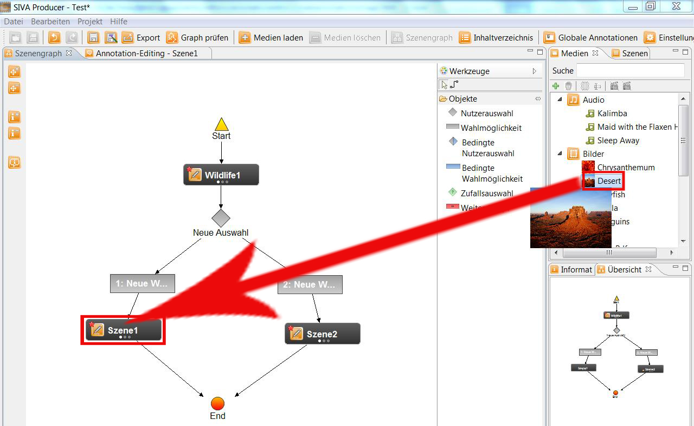
In what followes a window where you can name your annotation opens. If no name is chosen the programme will assign one.
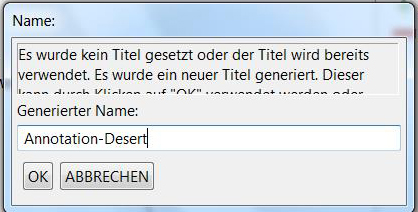
To be able to edit the annotation you have to select the scene in the scenegraph by clicking onto
Now a new window will open.
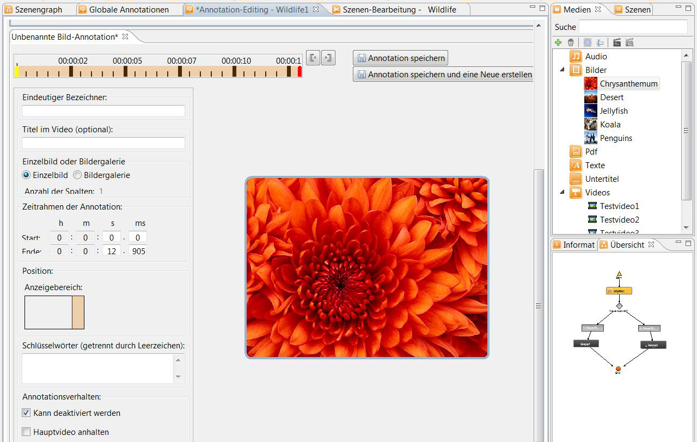
2) A second option would be to click onto the annotation-button
in the scene where you want to add an annotation, in the scenegraph (an annotation already exists) or
 (still no annotation added).
(still no annotation added).
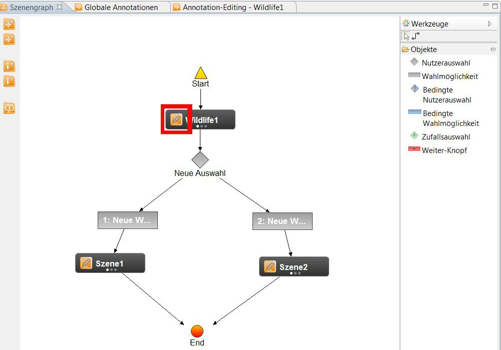
A new window open where you can add and edit annotations:
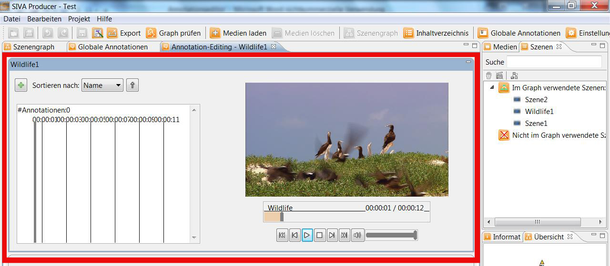
Add new annotation
To create a new annotation you have to click onto
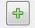
After that you have the choice between Standard-Annotations und Mark-Annotations.
The standard-annotations will appear and be played in the project at the moment when they are placed.
If you have created a mark-annotation a symbol will appear first and the user can click on it so that the annotation will
appear and can be played.
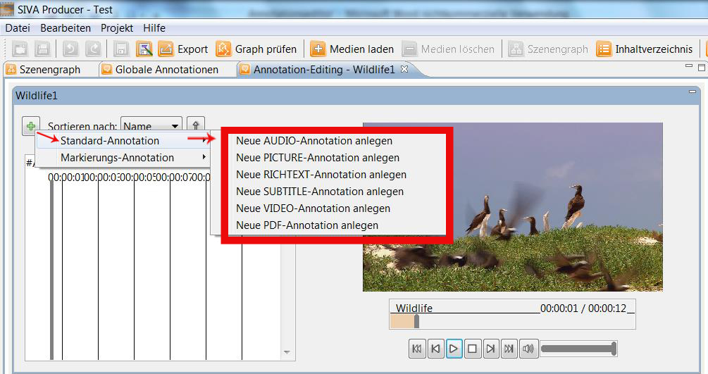
Now the different types of annotations can be added:
For the mark-annotations you can choose between:
- Audio-annotations
- Picture-annotations
- Richtext-annotations
- Video-annotations
- PDF-annotations
An annotation always consists of a content, a duration and a name. According to the type of the annotation the content of the
programme can be changed. The name of the annotation can be chosen by the user. If no name is inserted, the programme will
do this automatically.
Settings
For the annotation the following settings can be done:
- scene that shoud be attached to an annotation (is defined in the scenegraph)
- type of the annotation: audio, picture, richtext, subtitle, video, PDF
- starting point of the annotation
- ending point of the annotation
- name of the annotation (will be chosen by the sytem if the user does not insert one)
- indicating range in the player
- opening of a new window to display the annotation
Setting the starting- and the ending point
For every annotation the starting- and ending point have to be defined.
That can be done in various ways:

- One option is to insert them directly into the input field.
- You can also set the starting point by left-clicking and the ending point by right-clicking with the mouse in the timeline.
- Moreover you can move the yellow marker (starting point) and the red one (ending point) by maintaining the left mousebutton
pressed.
- Furhtermore you can put the grey marker there where you want the scene to start and end in the upper window. With the help of
the buttons "start" and "end" you can define them.
Indicating range of the annotation
Moreover you can change the position of where the annotation should be placed later on in the finished video.
That can be in one of the edge areas or in a proper window.
Via doubleclick onto the indicating range a new window opens where the position and the size of the video annotation can be defined.
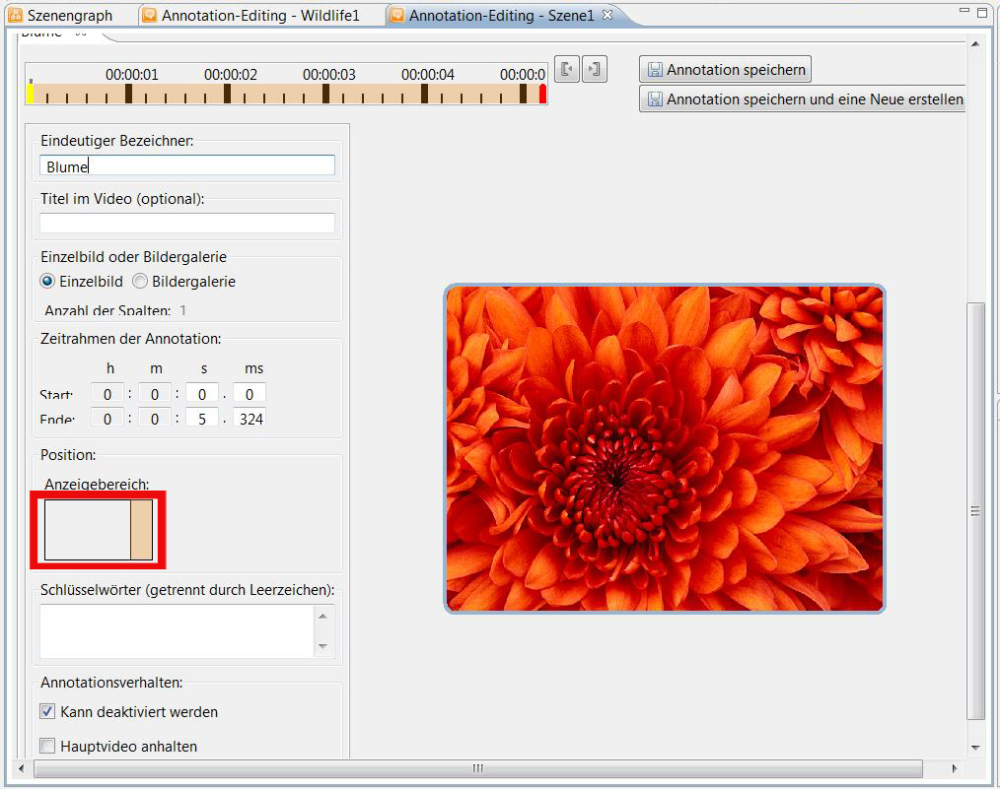
If you have decided to use a mark-annotation moreover the different symbols that can appear in you finished project
will be shown. Here you can choose between a button, an ellipse and a polygon.
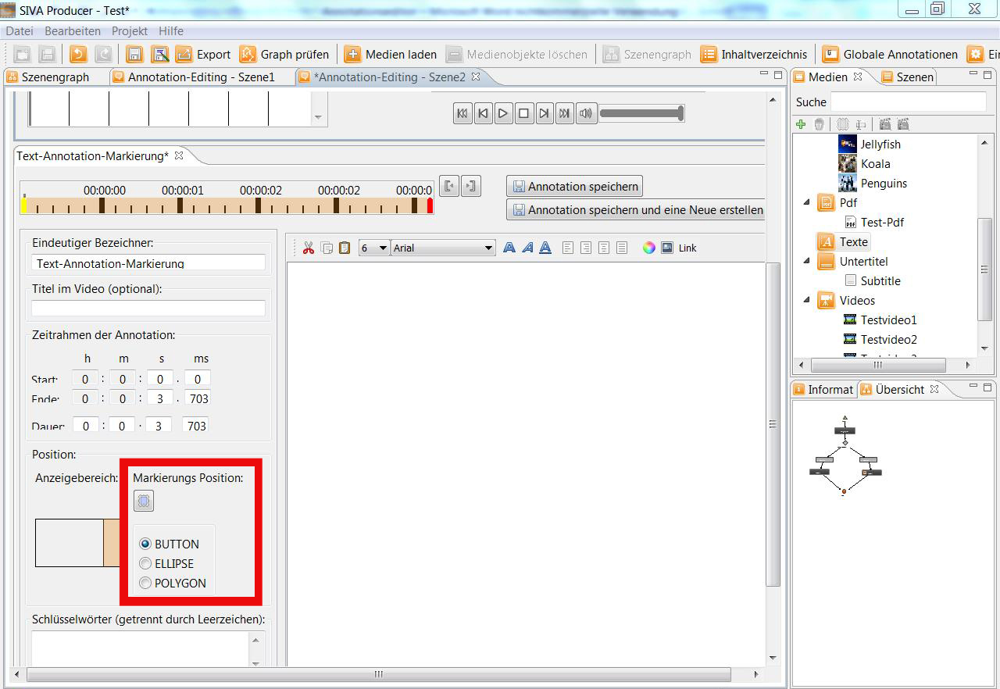
- 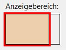
If the left side is coloured in orange the annotation will appear later on directly on the picture.
- 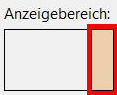
If the right side is coloured in orange the annotation can be opened on the right margin later on.
- Here you can open and close the bar with the annotations.
In the finished project that could look as follows:
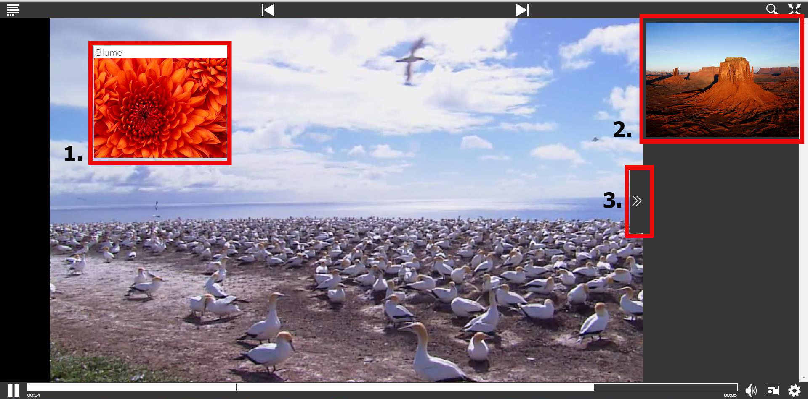
Keywords
For every annotation keywords can be added that should facilitate the searching option afterwards.
Properties of the annotation
Besides the usual settings you can decide for every annotation how it should behave in the finished project.
Therefore you can choose whether you the annotation should be deactivated or the main video should be able to be stopped.
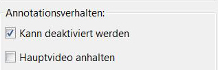
As well as for the audio as for the video annotations you can additionally select whether you want the sound of the mainvideo to
silence while the sound of the annotation is played.

Save the annotation
If all the settings are made, the annotation can be saved by clicking onto the save-button. If you want to save the annotation
and immediately create another one you need to click onto "Save annotation and create new one".
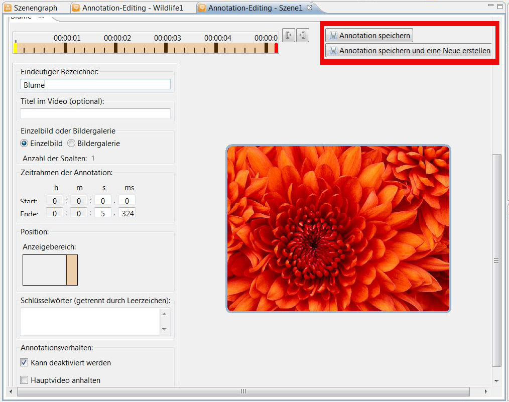
From now on the annotation appears in the timeline.
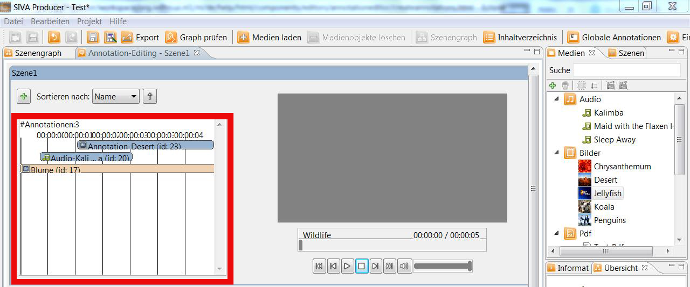
Delete an annotation
Via rightclick onto the bar that shows the desired annotation, the annotation can be deleted as well.
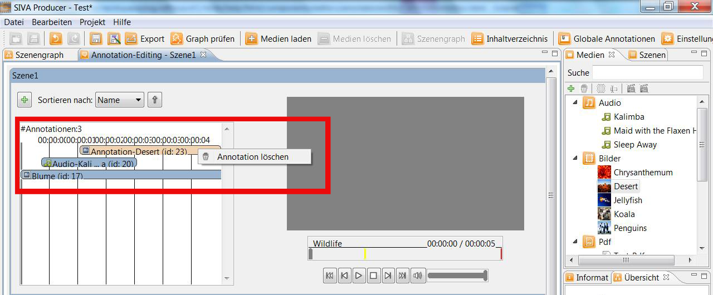